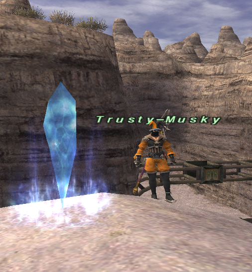

Current Reality NPC guide
Trusty-Musky · Purchase Trusts
Choose your companions, pay with Kindred’s Seals, and permanently learn their summons.
Find him in Mhaura
Trusty-Musky stands beside Home Point #1 at X −10.990, Y −15.813, Z 88.810. Look for the orange-clad NPC beside the blue crystal in this photo.

What he does
He sells 119 Trust summons for 1–10 Kindred’s Seals each. A purchase permanently teaches the selected summon. Monberaux is unavailable; Alchemist is a playable job on Current Reality.
You can use up to five purchased, compatible Trusts alongside your character, within the normal six-member party limit. You do not need a nation Trust tutorial, a Shadow Lord clear, Rhapsody in White, or Rhapsody in Crimson to buy the Trusts or use those five slots.
Buy a companion
- Speak to Trusty-Musky. On your first visit, continue the introduction or select Skip to catalogue.
- Choose All shadows, Basic shadows, or Other shadows. Use Next and Previous to browse the list.
- Select a Trust to see its role and current price, then select Choose this shadow.
- Within three minutes, trade exactly the requested Kindred’s Seals and no other items.
- After the successful trade, summon the companion through Magic → Trust or
/ma "Trust Name" <me>.
Speak to him again to cancel a pending selection or choose another Trust. Beastmen’s Seals, gil, mixed trades, and the wrong seal quantity are rejected without taking items.
If you trade Kindred’s Seals before selecting a Trust, he opens a free catalogue preview and leaves those seals with you. Select the companion first, then trade its exact price.
Prices and discounts
The catalogue displays each Trust’s price before you pay. See all 119 base prices in the Trust catalogue; each roster card also shows the cost.
Completing a matching legacy Trust meeting or redeeming its Cipher records a one-time one-seal discount for that companion. The minimum purchase price is still one seal. Repeating the same memory does not stack the discount. Legacy Cipher redemption retains the original nation NPC and permit requirements.
Those optional routes no longer grant free summons. Other quest progression, permits, and mission rewards remain available.
Using your purchased Trusts
Summon before pulling an enemy. Normal restrictions still apply: permitted areas, party leadership, no alliance, no enmity when summoning, the party-member join delay, duplicate/version compatibility, and battlefield limits. Buying five companions does not make incompatible versions summonable together.
Old learned rosters reset once when each existing character first logs in under the purchase system. Future purchases are saved. Your playable Alchemist spells are separate and remain available.
Five-Trust capacity and troubleshooting → · Vapor’s worker expeditions → · Gobbald-telefix’s outpost journeys →